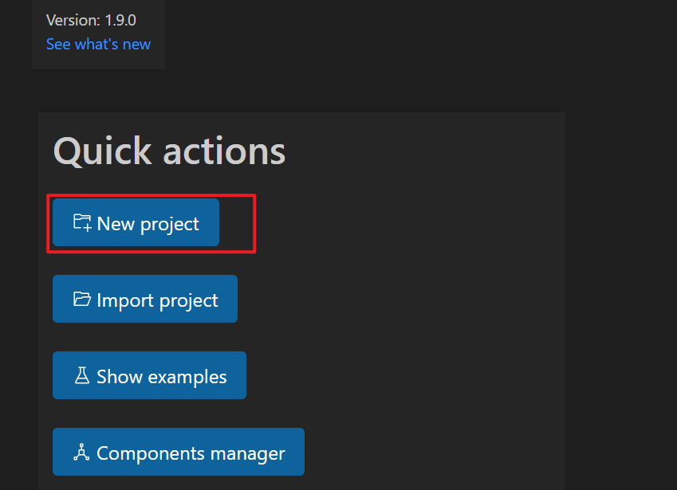
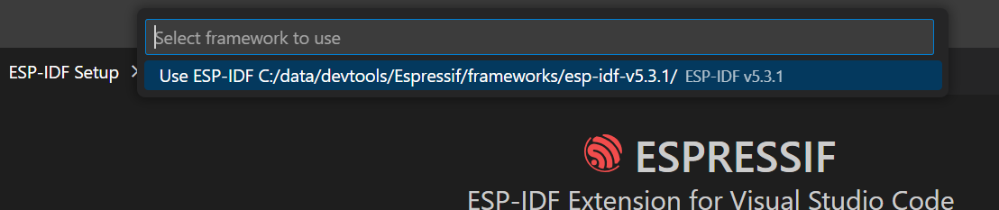
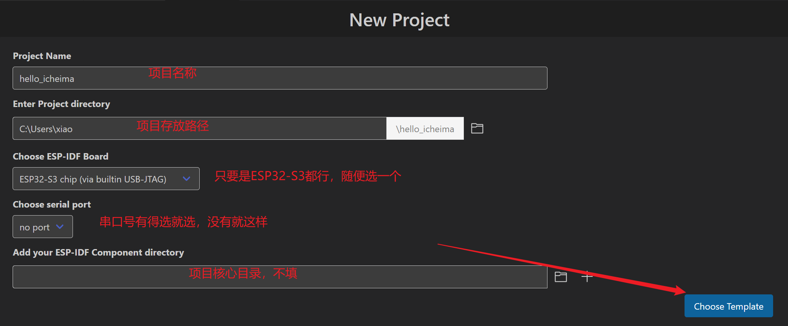
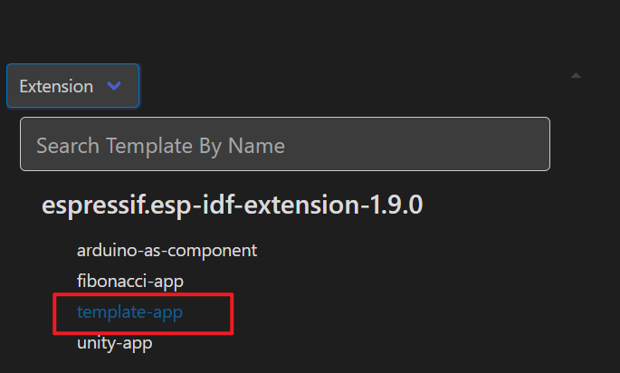
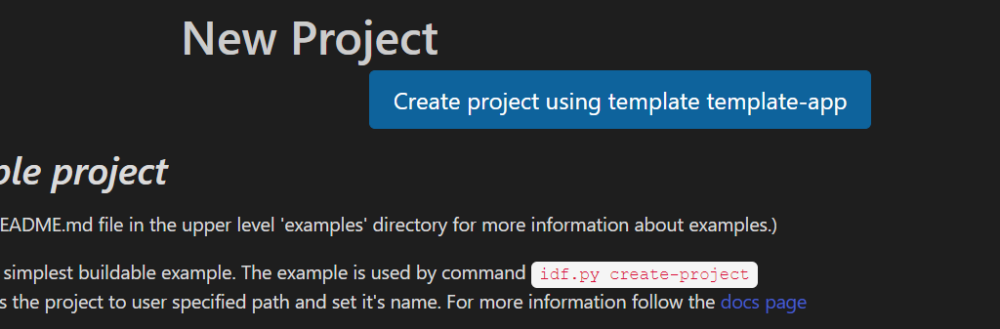
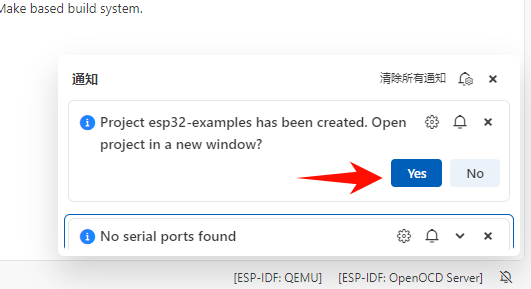

<!DOCTYPE lake>
<a class="yuque-card-link" href="https://player.bilibili.com/player.html?bvid=BV1UL3tzKEVi&amp;p=3&amp;page=3&amp;autoplay=0" rel="noopener noreferrer" target="_blank">thirdparty：thirdparty</a><h2 data-lake-id="NZXMC" data-lake-index-type="2" id="NZXMC"><span data-lake-id="ud8e70ef3" id="ud8e70ef3">新建工程</span></h2><p data-lake-id="u4b1bb108" id="u4b1bb108"></p><h3 data-lake-id="fKGOx" data-lake-index-type="2" id="fKGOx"><span data-lake-id="u4efc9024" id="u4efc9024">选择idf版本</span></h3><p data-lake-id="ub8ce1064" id="ub8ce1064"></p><h3 data-lake-id="fUXnd" data-lake-index-type="2" id="fUXnd"><span data-lake-id="u5f9f91f1" id="u5f9f91f1">填写参数</span></h3><p data-lake-id="uc7a5a0c8" id="uc7a5a0c8"></p><h3 data-lake-id="s6wPS" data-lake-index-type="2" id="s6wPS"><span data-lake-id="u622f3b5a" id="u622f3b5a">选择模板</span></h3><p data-lake-id="u0ebf108f" id="u0ebf108f"></p><p data-lake-id="u8924f83e" id="u8924f83e"><span data-lake-id="u974882fc" id="u974882fc">单击下面按钮即可完成</span></p><p data-lake-id="u1387ac26" id="u1387ac26"></p><p data-lake-id="u2df3ff7c" id="u2df3ff7c"><span data-lake-id="u367928c8" id="u367928c8">创建完成后，记得点击右下角的通知，打开工程</span></p><p data-lake-id="ua3cb9832" id="ua3cb9832"></p><p data-lake-id="ua6f7fada" id="ua6f7fada"><br/></p><h2 data-lake-id="oOhqT" id="oOhqT"><span data-lake-id="u6afa7fb7" id="u6afa7fb7">示例代码</span></h2><p data-lake-id="uc7963765" id="uc7963765"><a data-lake-id="u8b4e3a28" href="https://docs.espressif.com/projects/esp-idf/zh_CN/stable/esp32s3/get-started/windows-setup.html#id7" id="u8b4e3a28" rel="noopener noreferrer" target="_blank"><span data-lake-id="u32db0529" id="u32db0529">https://docs.espressif.com/projects/esp-idf/zh_CN/stable/esp32s3/get-started/windows-setup.html#id7</span></a></p><span class="yuque-card-unsupported">[codeblock]</span><p data-lake-id="ub971a136" id="ub971a136"><br/></p><h2 data-lake-id="PE2aa" id="PE2aa"><span data-lake-id="u6497d3cb" id="u6497d3cb">小结</span></h2><p data-lake-id="u79c5a34a" id="u79c5a34a"><span data-lake-id="ue19c3e33" id="ue19c3e33">在本章中，我们通过打印hello world日志这样简单的例子来验证我们的开发环境是否搭建完成。在以后的学习过程中，我们其实都应当从简单的例子开始学习。</span></p><p data-lake-id="u7aebf5f3" id="u7aebf5f3"><span data-lake-id="u3027bade" id="u3027bade">​</span><br/></p><p data-lake-id="udf5e3d70" id="udf5e3d70"><span data-lake-id="u97496429" id="u97496429">​</span><br/></p><p data-lake-id="ufd14ba32" id="ufd14ba32"><span data-lake-id="u3f8d1967" id="u3f8d1967">扩展仓库：</span><a data-lake-id="uebe2b229" href="https://gitee.com/xiaokaijun/esp32s3_example.git" id="uebe2b229" rel="noopener noreferrer" target="_blank"><span data-lake-id="u92fbbf06" id="u92fbbf06">https://gitee.com/xiaokaijun/esp32s3_example.git</span></a></p><p data-lake-id="ud158a82d" id="ud158a82d"><span data-lake-id="u9346d505" id="u9346d505">如果想进一步学习IDF，也可以参考我的仓库代码</span></p><p data-lake-id="u5df8f160" id="u5df8f160"><span data-lake-id="ue10e5a72" id="ue10e5a72">​</span><br/></p><p data-lake-id="ud9757bb6" id="ud9757bb6"><span data-lake-id="ue3a7a96d" id="ue3a7a96d">外设开发文档： </span><a data-lake-id="uebc1818c" href="https://docs.espressif.com/projects/esp-idf/zh_CN/v5.4.3/esp32s3/api-reference/peripherals/index.html" id="uebc1818c" rel="noopener noreferrer" target="_blank"><span data-lake-id="u21398550" id="u21398550">https://docs.espressif.com/projects/esp-idf/zh_CN/v5.4.3/esp32s3/api-reference/peripherals/index.html</span></a></p>